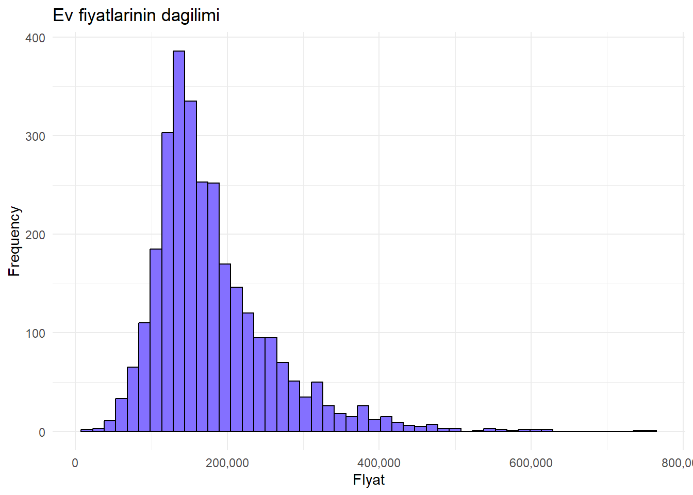
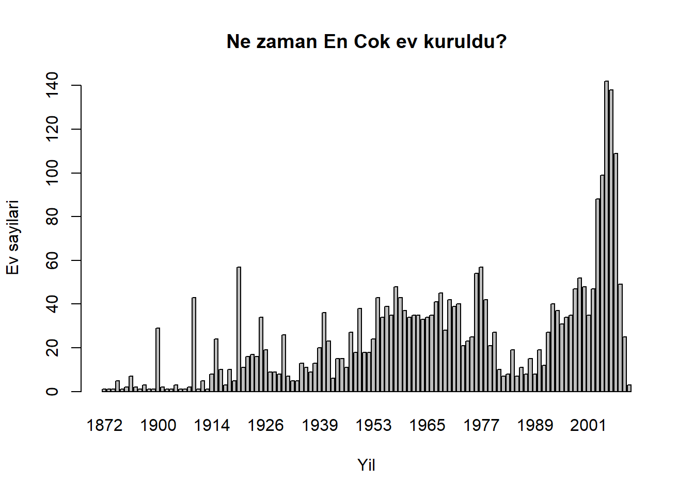
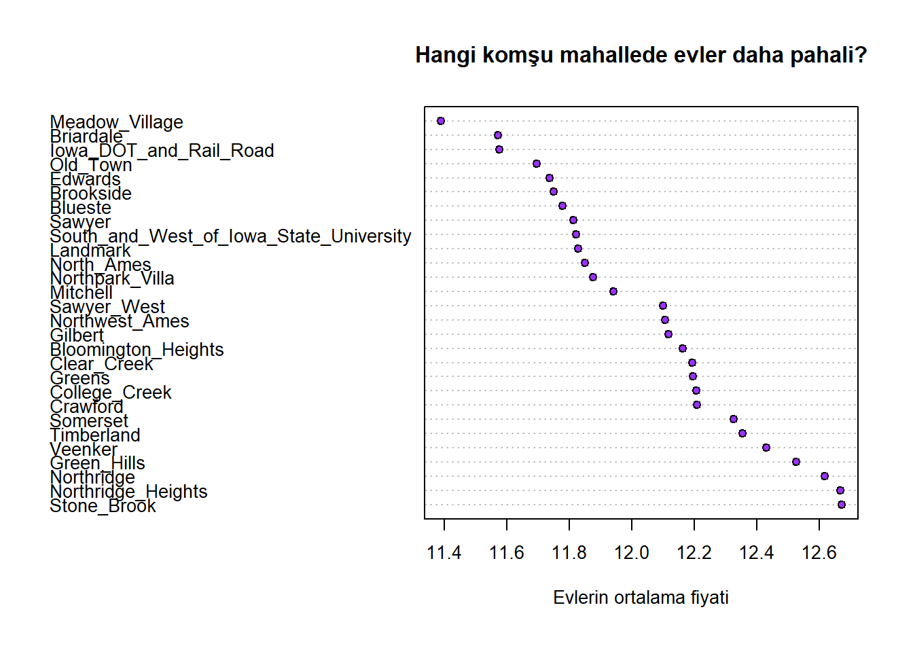
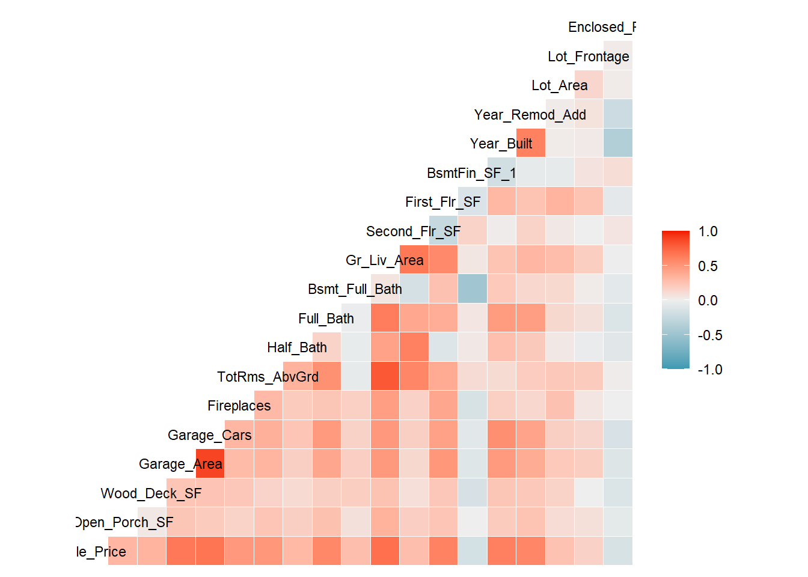
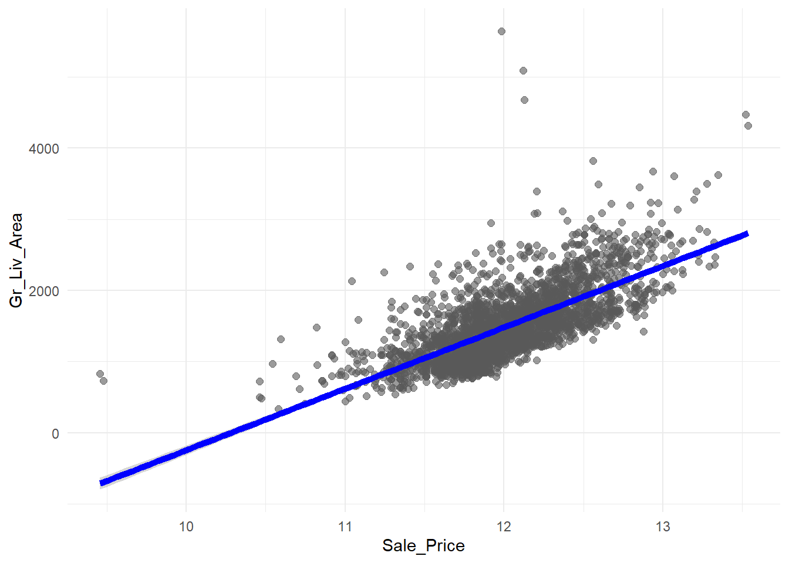
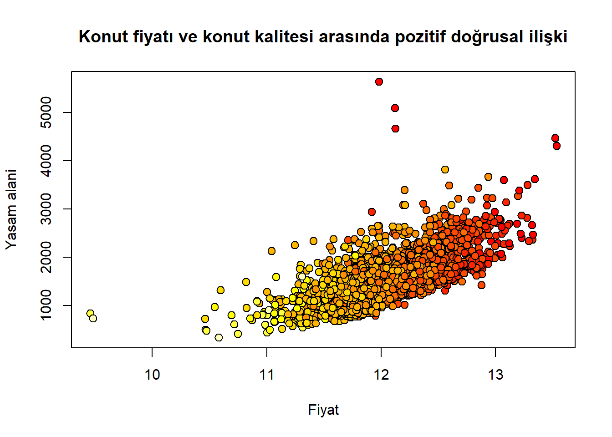
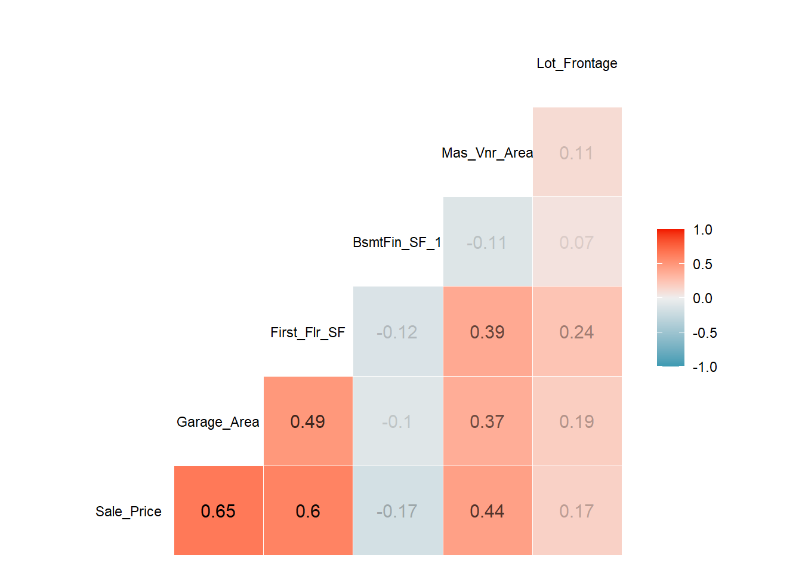
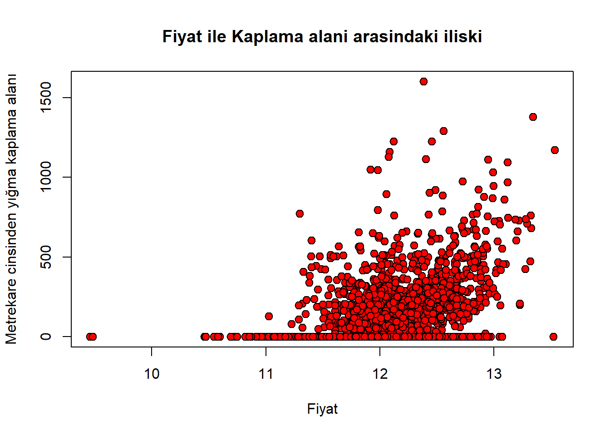
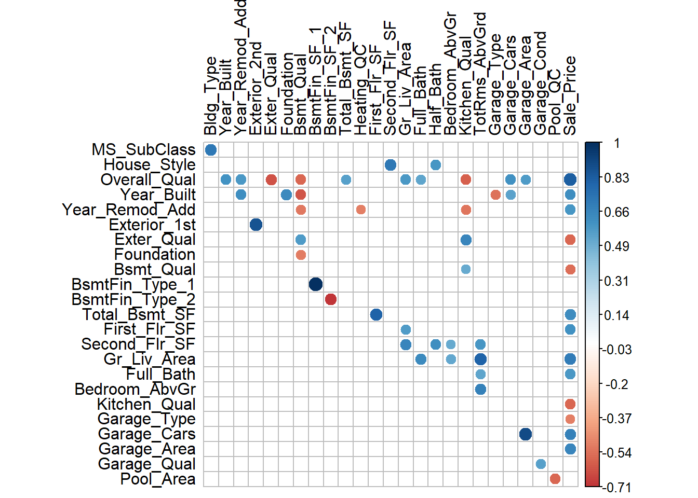
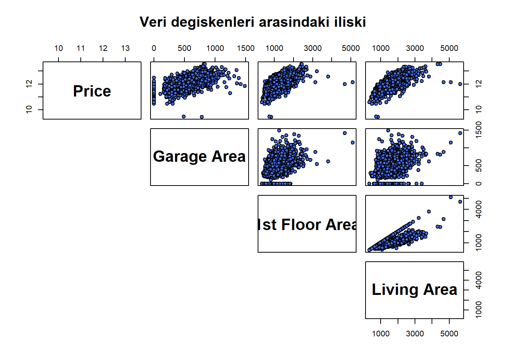

library(AmesHousing)Warning: package 'AmesHousing' was built under R version 4.4.2Bu ödev konut piyasası ile ilgili verilere dayanmaktadır. Keşifsel bir veri analizi ile başlayacağım, ilgilendiğim bazı değişkenleri grafikler üzerinde sunacağım ve dağılımlarını inceleyeceğim. Ödevin ikinci bölümünde, korelasyon ve regresyon analizi yaparak çoklu regresyon modeli oluşturmaya ve modelde mevcut olan sorunları düzeltmeye çalışacağım. Amacım, konut fiyatlarını tahmin etmek için en iyi doğrusal modeli bulmak.
Veri seti, Ames, Iowa’daki evlerin farklı özelliklerini temsil eden 82 değişkene ait 2930 gözlem içermektedir. Veri dokümantasyonundan, şu değişkenlerin olduğu anlaşılmaktadır: 23 nominal, 23 ordinal, 14 kesikli ve 20 sürekli değişken.
Bu analizi yapmanın en iyi yolu, diğer özelliklere bağlı olması gerektiği için konut fiyatını tahmin edilen değişken olarak kullanmak gibi görünüyor. Benim varsayımım, mahalle, evin büyüklüğü, durumu ve ek özelliklerin nihai fiyatı etkilemesi gerektiği yönünde olacaktır.
Bu nedenle, keşifsel veri analizine ev fiyatlarının dağılımına bakarak başlayacağım.
library(ggplot2)
# Fiyatlarin histogrami
ggplot(ames, aes(x = Sale_Price)) +
geom_histogram(color = "black", fill = "lightslateblue", bins = 50) +
scale_x_continuous(labels = comma) +
labs(title = "Ev fiyatlarinin dagilimi", x = "FIyat", y = "Frequency") +
theme_minimal()
Analiz sürecinde verilerin dağılım şekillerini tanımak önemlidir. Histogramlar, görsel olarak temsil edilen dağılımı görmeye yardımcı olur. Histogramlar, belirli sayıda kutu için veri noktalarının frekanslarını gösterir (Bluman, 2018).
Ev fiyatlarının dağılımı sağa çarpıktır ve çoğu ev 200.000 $’ın altında bir fiyat aralığındadır. Tanımlayıcı istatistiklerden, fiyat aralığının 12789 dolar ile 755000 arasında olduğunu, ortalamanın 180796 ve medyan fiyatın 160.000’e eşit olduğunu biliyorum.
Keşifsel veri analizinin bir sonraki adımı olarak, evlerin yaşına ve kalitesine bakacağım.
barplot(table(ames$Year_Built),
main = "Ne zaman En Cok ev kuruldu?",
xlab = "Yil",
ylab = "Ev sayilari")
Görünüşe göre 2000’li yılların başında bir konut patlaması yaşanmış ve tam değerleri görmek için frekans tablosuna baktığımda en fazla konutun 2005 yılında (142 konut) inşa edildiğini, bunu 2008 yılında 138 konutun izlediğini ve daha sonra değerin düşmeye başladığını gördüm. 2007 ve 2008 yılları arasında inşa edilen konut sayısı yarı yarıya azalmıştır ve bunun nedeni büyük olasılıkla finansal krizdir.
── Attaching core tidyverse packages ──────────────────────── tidyverse 2.0.0 ──
✔ dplyr 1.1.4 ✔ readr 2.1.5
✔ forcats 1.0.0 ✔ stringr 1.5.1
✔ lubridate 1.9.3 ✔ tibble 3.2.1
✔ purrr 1.0.2 ✔ tidyr 1.3.1
── Conflicts ────────────────────────────────────────── tidyverse_conflicts() ──
✖ readr::col_factor() masks scales::col_factor()
✖ purrr::discard() masks scales::discard()
✖ dplyr::filter() masks stats::filter()
✖ dplyr::lag() masks stats::lag()
ℹ Use the conflicted package (<http://conflicted.r-lib.org/>) to force all conflicts to become errorsneighbourhoods = tapply(ames$Sale_Price, ames$Neighborhood, median)
neighbourhoods = sort(neighbourhoods, decreasing = TRUE)
dotchart(neighbourhoods, pch = 21, bg = "purple1",
cex = 0.85,
xlab="Evlerin ortalama fiyati",
main = "Hangi komşu mahallede evler daha pahali?")Warning in dotchart(neighbourhoods, pch = 21, bg = "purple1", cex = 0.85, : 'x'
is neither a vector nor a matrix: using as.numeric(x)
Ortalamayı kullandım çünkü ortalamaya göre aykırı değerlerden daha az etkileniyor (eğer bir milyonun üzerinde bir ev olsaydı, ortalama değer artardı ama orta değer yine aynı kalırdı).
Yukarıdaki grafikten mahallenin ev fiyatlarını etkilediğini görmek mümkün - şehrin en pahalı bölgeleri en ucuz bölgelerinden üç kat daha yüksek fiyatlara sahip
korelasyon katsayısı iki değişken arasındaki doğrusal ilişkinin gücünü gösterir. Değerleri -1 ile 1 arasında değişir. -1’e yakın bir değere sahip bir katsayı güçlü bir negatif ilişkiyi, 0’a yakın bir katsayı doğrusal ilişkinin olmadığını ve 1’e yakın bir değere sahip bir katsayı güçlü bir pozitif ilişkiyi gösterir .
Bu veri setindeki değişkenler arasındaki korelasyonu görmek istiyorum
Warning: package 'GGally' was built under R version 4.4.2Registered S3 method overwritten by 'GGally':
method from
+.gg ggplot2numeric = ames %>% select(where(is.numeric))
df1 = numeric %>% select(Sale_Price, Open_Porch_SF, Wood_Deck_SF, Garage_Area, Garage_Cars, Fireplaces, TotRms_AbvGrd, Half_Bath, Full_Bath, Bsmt_Full_Bath, Gr_Liv_Area, Second_Flr_SF, First_Flr_SF, BsmtFin_SF_1, Year_Built, Year_Remod_Add, Lot_Area, Lot_Frontage, Enclosed_Porch)
ggcorr(df1, size = 3)
Artık değişkenlerin adlarını görmek daha kolay ve hangilerinin bağımlı değişkenle (Sale Price) en güçlü pozitif ve negatif korelasyona sahip olduğunu belirleyebileceğim.
evin genel kalitesinin fiyatıyla en yüksek pozitif korelasyona sahip olduğu görülmektedir ki bu da mantıklıdır, çünkü ev ne kadar iyi durumdaysa, alıcılar o kadar fazla ödeme yapmaya isteklidir.
Bununla birlikte, sıralı kategorik bir değişkenle bir dağılım grafiği oluşturmak mantıklı olmayacaktır, bu nedenle satış fiyatı ile feet kare cinsinden yer üstü yaşam alanı arasındaki ilişkiyi çizeceğim.
ggplot(ames, aes(Sale_Price, Gr_Liv_Area)) +
geom_point(size = 2, color = "gray35", alpha = 0.6) +
theme_minimal() +
geom_smooth(method = lm, color = "blue", size = 2) +
scale_x_continuous(labels = comma)Warning: Using `size` aesthetic for lines was deprecated in ggplot2 3.4.0.
ℹ Please use `linewidth` instead.`geom_smooth()` using formula = 'y ~ x'
Dağılım grafikleri, sayısal değişkenlerin sıralı çiftlerini gösterir. Bağımsız ve bağımlı değişkenler arasındaki ilişkiyi (ya da ilişkisizliği) görmeye yardımcı olur. Amaçları, ilgilenilen değişkenler arasındaki ilişkinin doğasını göstermektir.
Şimdi, fiyat arttığında hem yaşam alanının hem de ev kalitesinin de arttığı açıkça görülebilir. Çizgi, yaşam alanı ile konut fiyatı arasındaki ilişkinin doğrusal bir modelini göstermektedir. Ayrıca veri setinde bazı olağandışı gözlemler olduğu da görülebilir.
Noktaların ev kalitesine göre renklendirileceği başka bir dağılım grafiği oluşturacağım
plot(ames$Sale_Price, ames$Gr_Liv_Area,
pch = 21, cex=1.2,
xlab = "Fiyat",
ylab = "Yasam alani",
main = "Konut fiyatı ve konut kalitesi arasında pozitif doğrusal ilişki",
bg = c(rev(heat.colors(10)))[unclass(ames$Overall_Qual)])
Sıralı renk ölçeği kullandım, çünkü tüm ayrı kategorileri görmekle o kadar ilgilenmiyorum, bu nedenle renk koyulaştıkça değerler artıyor.
Şimdi, hangi değişkenin 0,5’e en yakın korelasyon katsayısına sahip olduğunu kontrol edeceğim. Renk aralığında bu değere yakın görünen değişkenleri seçtim ve bazı ayrık veya kategorik değişkenleri eledim.
df1 = numeric %>% select(Sale_Price, Garage_Area, First_Flr_SF, BsmtFin_SF_1, Mas_Vnr_Area, Lot_Frontage)
ggcorr(df1, size = 3, label = TRUE, label_size = 4, label_round = 2, label_alpha = TRUE)
Metrekare cinsinden yığma kaplama alanını temsil eden değişkenin(Mas_Vn_Area) 0,51 korelasyon katsayısına sahip olduğu görülmektedir.
plot(ames$Sale_Price, ames$Mas_Vnr_Area,
pch = 21, cex=1.2,
xlab = "Fiyat",
ylab = "Metrekare cinsinden yığma kaplama alanı",
main = "Fiyat ile Kaplama alani arasindaki iliski",
bg = c("red"))
corr_simple <- function(data = ames,sig = 0.5){
df_cor <- ames %>% mutate_if(is.character, as.factor)
df_cor <- df_cor %>% mutate_if(is.factor, as.numeric)
corr <- cor(df_cor)
#prepare to drop duplicates and correlations of 1
corr[lower.tri(corr,diag = TRUE)] <- NA
#drop perfect correlations
corr[corr == 1] <- NA #turn into a 3-column table
corr <- as.data.frame(as.table(corr))
#remove the NA values from above
corr <- na.omit(corr) #select significant values
corr <- subset(corr, abs(Freq) > sig)
#sort by highest correlation
corr <- corr[order(-abs(corr$Freq)),] #print table
print(corr) #turn corr back into matrix in order to plot with corrplot
mtx_corr <- reshape2::acast(corr, Var1~Var2, value.var="Freq")
#plot correlations visually
corrplot(mtx_corr, is.corr = FALSE, tl.col="black", na.label=" ")
}
corr_simple() Var1 Var2 Freq
2706 BsmtFin_Type_1 BsmtFin_SF_1 0.9991444
4920 Garage_Cars Garage_Area 0.8898660
1886 Exterior_1st Exterior_2nd 0.8654165
6335 Overall_Qual Sale_Price 0.8256450
4339 Gr_Liv_Area TotRms_AbvGrd 0.8077721
3440 Total_Bsmt_SF First_Flr_SF 0.8004287
1135 MS_SubClass Bldg_Type 0.7188418
3499 House_Style Second_Flr_SF 0.7175417
2870 BsmtFin_Type_2 BsmtFin_SF_2 -0.7113410
6364 Gr_Liv_Area Sale_Price 0.6958623
6378 Garage_Cars Sale_Price 0.6748777
4344 Bedroom_AbvGr TotRms_AbvGrd 0.6726472
3689 Second_Flr_SF Gr_Liv_Area 0.6552512
4239 Exter_Qual Kitchen_Qual 0.6535235
6379 Garage_Area Sale_Price 0.6507663
2287 Year_Built Foundation 0.6366324
2123 Overall_Qual Exter_Qual -0.6331484
3934 Gr_Liv_Area Full_Bath 0.6303208
6356 Total_Bsmt_SF Sale_Price 0.6256220
2368 Year_Built Bsmt_Qual -0.6218544
6337 Year_Built Sale_Price 0.6154845
1558 Year_Built Year_Remod_Add 0.6120953
4013 Second_Flr_SF Half_Bath 0.6116337
6361 First_Flr_SF Sale_Price 0.6026285
4796 Overall_Qual Garage_Cars 0.5995467
1475 Overall_Qual Year_Built 0.5970272
4229 Overall_Qual Kitchen_Qual -0.5896450
6338 Year_Remod_Add Sale_Price 0.5861531
4337 Second_Flr_SF TotRms_AbvGrd 0.5852137
3985 House_Style Half_Bath 0.5850323
6367 Full_Bath Sale_Price 0.5773341
6345 Exter_Qual Sale_Price -0.5765050
2366 Overall_Qual Bsmt_Qual -0.5728611
6371 Kitchen_Qual Sale_Price -0.5722473
3662 Overall_Qual Gr_Liv_Area 0.5705559
5740 Pool_Area Pool_QC -0.5699490
1556 Overall_Qual Year_Remod_Add 0.5696088
2376 Exter_Qual Bsmt_Qual 0.5648838
4877 Overall_Qual Garage_Area 0.5635623
3688 First_Flr_SF Gr_Liv_Area 0.5621658
6348 Bsmt_Qual Sale_Price -0.5509680
3014 Overall_Qual Total_Bsmt_SF 0.5477656
4636 Year_Built Garage_Type -0.5430286
5084 Garage_Qual Garage_Cond 0.5415255
4232 Year_Remod_Add Kitchen_Qual -0.5387844
4798 Year_Built Garage_Cars 0.5379817
4342 Full_Bath TotRms_AbvGrd 0.5285992
2369 Year_Remod_Add Bsmt_Qual -0.5276444
3905 Overall_Qual Full_Bath 0.5222626
4096 Gr_Liv_Area Bedroom_AbvGr 0.5168075
2378 Foundation Bsmt_Qual -0.5142868
6376 Garage_Type Sale_Price -0.5047736
4094 Second_Flr_SF Bedroom_AbvGr 0.5046506
4242 Bsmt_Qual Kitchen_Qual 0.5042976
3179 Year_Remod_Add Heating_QC -0.5036757
Şimdi, doğrusal bir model için değişkenleri seçmek daha kolay olmalı. İlgilendiğim değişkenler arasındaki doğrusal ilişkiyi çizerek başlayacağım:
df2 = ames %>% select(Sale_Price, Garage_Area, First_Flr_SF, Gr_Liv_Area)
# Plot
pairs(df2,
main = "Veri degiskenleri arasindaki iliski",
pch = 21,
bg = c("royalblue2"),
labels = c("Price","Garage Area","1st Floor Area","Living Area"),
lower.panel = NULL,
font.labels = 2,
cex.labels = 2) 
Çizimlerden, 1. kat alanı ile yerden yüksek yaşam alanı (evin çok katlı bir planı varsa, birinci ve ikinci kattaki alanların toplamı olduğuna inanıyorum) arasında doğrusal bir ilişki olabileceği görülüyor, bu nedenle çoklu doğrusal bağlantı olup olmadığını kontrol etmem gerekecek.
Bir ilişkinin anlamlılığını test etmek için dağılım grafikleri çizdikten ve korelasyon katsayılarının değerlerini hesapladıktan sonra, bir sonraki adım regresyon doğrusunun denklemini belirlemek olacaktır
Attaching package: 'explore'The following object is masked from 'package:GGally':
rescale01── Attaching packages ────────────────────────────────────── tidymodels 1.2.0 ──✔ broom 1.0.7 ✔ rsample 1.2.1
✔ dials 1.3.0 ✔ tune 1.2.1
✔ infer 1.0.7 ✔ workflows 1.1.4
✔ modeldata 1.4.0 ✔ workflowsets 1.1.0
✔ parsnip 1.2.1 ✔ yardstick 1.3.1
✔ recipes 1.1.0 ── Conflicts ───────────────────────────────────────── tidymodels_conflicts() ──
✖ purrr::discard() masks scales::discard()
✖ dplyr::filter() masks stats::filter()
✖ recipes::fixed() masks stringr::fixed()
✖ dplyr::lag() masks stats::lag()
✖ yardstick::spec() masks readr::spec()
✖ recipes::step() masks stats::step()
• Learn how to get started at https://www.tidymodels.org/start/Strata olarak Sale_Price değişkeni kullanıldığında, bu değişkenin dağılımı korunarak veri seti oluşturulur. Böylece eğitim ve test setlerinde Sale_Price oranları sabit kalır. Bu yöntem, dengesiz veri setleriyle çalışırken daha doğru sonuçlar elde edilmesine yardımcı olur.
Model doğrulama (validation), bir modelin gerçek hayatta nasıl performans göstereceğini değerlendirmek için yapılır. Modelin eğitim verileri üzerinde öğrendiklerini, daha önce görmediği yeni veriler üzerinde ne kadar başarılı bir şekilde uygulayabildiği test edilir. Bu süreç, aşırı uyum (overfitting) riskini azaltır ve modelin genel performansını ve genelleme kabiliyetini değerlendirmeyi sağlar.
# A tibble: 6 × 2
.pred Sale_Price
<dbl> <dbl>
1 11.9 12.1
2 12.2 12.3
3 11.5 11.7
4 11.6 11.6
5 11.9 11.9
6 12.6 12.6library(parsnip)
svm_model <- svm_rbf(
cost = 1, # Düzenleme parametresi
rbf_sigma = NULL, # RBF kernel parametresi (varsayılan olarak otomatik hesaplanır)
margin = 0.1 # Sınıf sınırında esneklik
) %>%
set_engine("kernlab") %>% # SVM motoru olarak 'kernlab' kullanılıyor
set_mode("regression") # Regresyon moduArz, belirli bir dönemde, belirli bir fiyattan üreticilerin piyasaya sunmaya hazır olduğu mal veya hizmet miktarını ifade eder.
Fiyat ile İlişkisi: Üreticiler, fiyatlar yükseldiğinde daha fazla kazanç sağlamak için arz miktarını artırır.
Arz Kanunu: Fiyat yükselirse arz artar, fiyat düşerse arz azalır (diğer tüm faktörler sabit kabul edildiğinde).
Arz fonksiyonu matematiksel olarak şu şekilde ifade edilir: Qs = a + bP
Qₛ: Arz edilen miktar
P: Fiyat
a: Fiyat sıfır olduğunda arz miktarını gösteren sabit terim (genelde 0 veya negatif bir değerdir).
b: Fiyat değişimlerinin arz üzerindeki etkisini ölçen katsayı (pozitiftir, çünkü fiyat arttıkça arz artar).
ÖRNEK:
Bir ürünün arz fonksiyonu:
Qs=10+2PQ_s = 10 + 2PQs=10+2P
Eğer fiyat 5 ise:
Qs=10+2×5=20Q_s = 10 + 2 = 20Qs=10+2×5=20
Bu durumda üreticiler, fiyat 5 olduğunda 20 birim ürün sunmaya hazırdır.
Talep, tüketicilerin belirli bir fiyattan satın almak istedikleri mal veya hizmet miktarını ifade eder.
Fiyat ile İlişkisi: Fiyat düştüğünde talep artar, fiyat yükseldiğinde ise talep azalır. Bu ilişki genellikle ters orantılıdır.
TALEP FONKSİYONU:
Talep fonksiyonu matematiksel olarak şu şekilde ifade edilir: Qd = a - bP
Qₐ: Talep edilen miktar
P: Fiyat
a: Fiyat sıfır olduğunda talep miktarını ifade eden sabit terim.
b: Fiyat değişimlerinin talep üzerindeki etkisini ölçen katsayı (negatiftir, çünkü fiyat arttıkça talep azalır).
ÖRNEK:
Bir ürünün talep fonksiyonu:
Qd=10−PQ_d = 10 - PQd=10−P
Eğer fiyat 5 ise:
Qd=10−5=5Q_d = 10 - 5 = 5Qd=10−5=5
Bu durumda tüketiciler, fiyat 5 olduğunda 5 birim ürün satın almak ister.
Talep esnekliği, bir malın fiyatındaki değişimlerin talep edilen miktarı nasıl etkilediğini ölçer.
Esnek Talep: Fiyat değişimlerine karşı talep miktarı belirgin şekilde değişir. Örneğin, lüks ürünler (saat, araba).
İnelastik Talep: Fiyat değişimlerine karşı talep miktarı çok az değişir veya hiç değişmez. Örneğin, temel ihtiyaç ürünleri (ekmek, su).
TALEP ESNEKLİĞİ FORMÜLÜ:
Ed = % talep değişimi / % fiyat değişimi
Arz esnekliği, bir malın fiyatındaki değişimlerin arz edilen miktarı nasıl etkilediğini ölçer.
Esnek Arz: Fiyat değişimlerine karşı arz miktarı belirgin şekilde değişir.
İnelastik Arz: Fiyat değişimlerine karşı arz miktarı çok az değişir veya hiç değişmez.
ARZ ESNEKLİĞİ FORMÜLÜ:
Es = % arz değişimi / % fiyat değişimi.